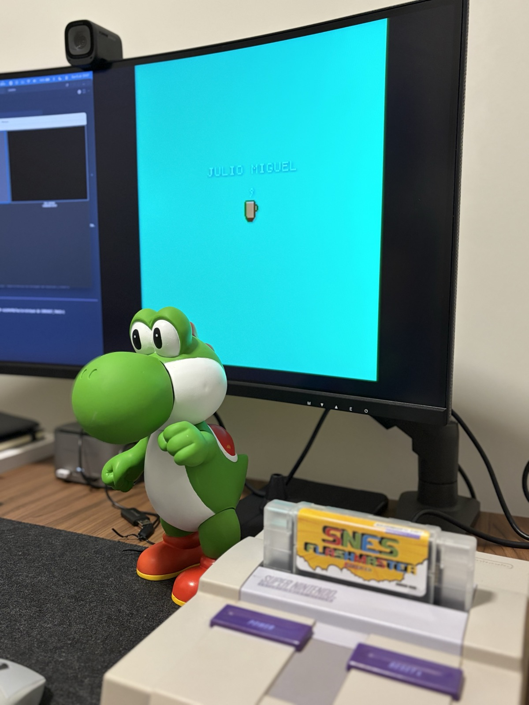

Meu primeiro "Hello World" rodando em um Super Nintendo real. Montei uma ROM pequena em assembly 65816, compilei localmente, copiei para um EverDrive e consegui ver o resultado no console.
É um projeto simples: texto na tela, uma xícara em sprite, vapor animado e um fade-in. Mas para mim o valor está no caminho completo: sair do código, passar pelo build da ROM, acertar header, vetores, layout LoROM, inicialização da PPU, tiles, paletas e finalmente ver tudo funcionando fora do emulador.
Não tem sistema operacional, não tem main, não tem API gráfica. O console liga,
lê o vetor de reset e começa a executar bytes. Pequeno milestone, mas daqueles que dão
vontade de continuar explorando.